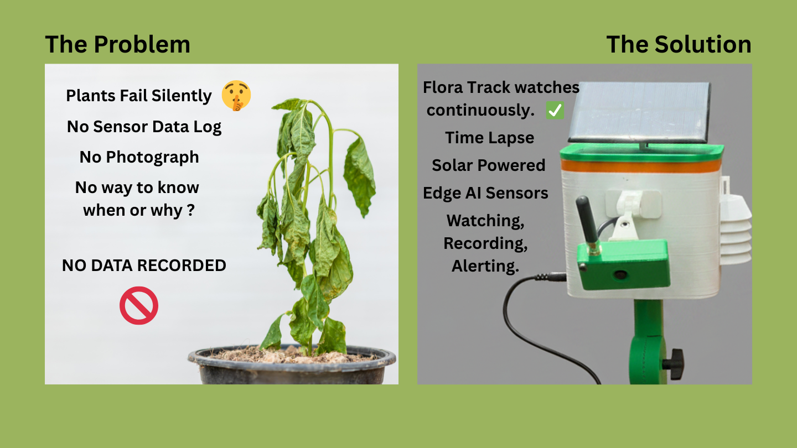

The Inspiration
A group of agricultural students spent weeks cultivating chilli plants. During a holiday, the irrigation system failed. By the time anyone returned, the crop had dried beyond recovery. There was no visual record, no environmental history, and no way to determine when or why the failure occurred.
Plants decline silently. Existing affordable tools do not continuously observe both the plant and its environment. I developed Flora Track to ensure every stage of a plant's life—and every failure—is automatically documented, analyzed, and explained.
